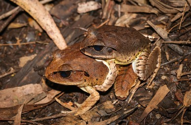

For narrative purposes, in my tale it seems that the returning to life of the frog is an immediate miracle, but that’s not the truth. The process of ice melting can last from several minutes to many hours, more likely the last one. The heart is the first organ in undertaking its function to secure the blood irrigation needed for the rest of the organs and the body.
Having said that, I want to share with you other scientific information regarding
“Lithobates sylvaticus” that I find very amusing.
The mating requires a “try and err” method, because they lack the hability of sex recognition. So, what males do is to embrace other frogs (males too!) in the breeding pond and just let free the ones that aren’t
“fat enough” to be carrying a lot of eggs (thus, not female ones).
Also, they are able to recognize their own family, tending to form groups among brothers and hang out together, leaving aside the not kin ones.
What a lovely species!!!
And finally, amphibians in general constitute an important indicator of environmental health. So, for a world more full of amazing frogs and less of fictional princes, if you come across a frog, please, just let it be.
Without further to do, I say goodbye for now! Until the next post!
Main sources:
Animal Diversity Web
NatureServe Explorer
The National Wildlife Federation